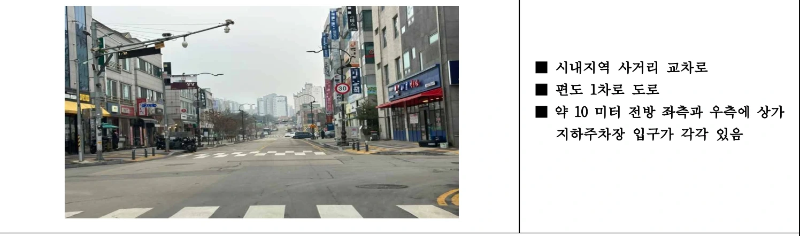

688. 다음과 같은 상황에서 가장 안전한 운전방법 2가지는?

- ①시속 30 킬로미터 이내의 속도로 운전한다.
- ②전방 10 미터 우측 상가 지하주차장으로 진입할 때에는 일시정지한 후에 안전한지 확인하면서 서행한다.
- ③전방 10 미터 좌측 상가 지하주차장으로 진입할 때에는 일단정지한 후에 안전한지 확인하면서 서행한다.
- ④좌회전하고자 하는 때에는 미리 방향지시등을 켜고 서행하면서 교차로의 중심 바깥쪽을 이용하여 좌회전한다.
- ⑤시내지역에서 개인형 이동장치를 운전할 때에는 보도로 주행한다.
정답 보기
정답
① 시속 30 킬로미터 이내의 속도로 운전한다.
② 전방 10 미터 우측 상가 지하주차장으로 진입할 때에는 일시정지한 후에 안전한지 확인하면서 서행한다.
근거·해설
전방 10 미터 좌측 상가 지하주차장으로 진입하려면 중앙선을 침범하면서 운전해야 한다. 모든 차의 운전자는 교차로에서 좌회전을 하려는 경우에는 미리 도로의 중앙선을 따라 서행하면서 교차로의 중심 안쪽을 이용하여 좌회전하여야 한다(도로교통법 제25조 제2항). 개인형 이동장치를 운전할 때에는 전용도로가 없는 경우 차도로 주행해야 한다.